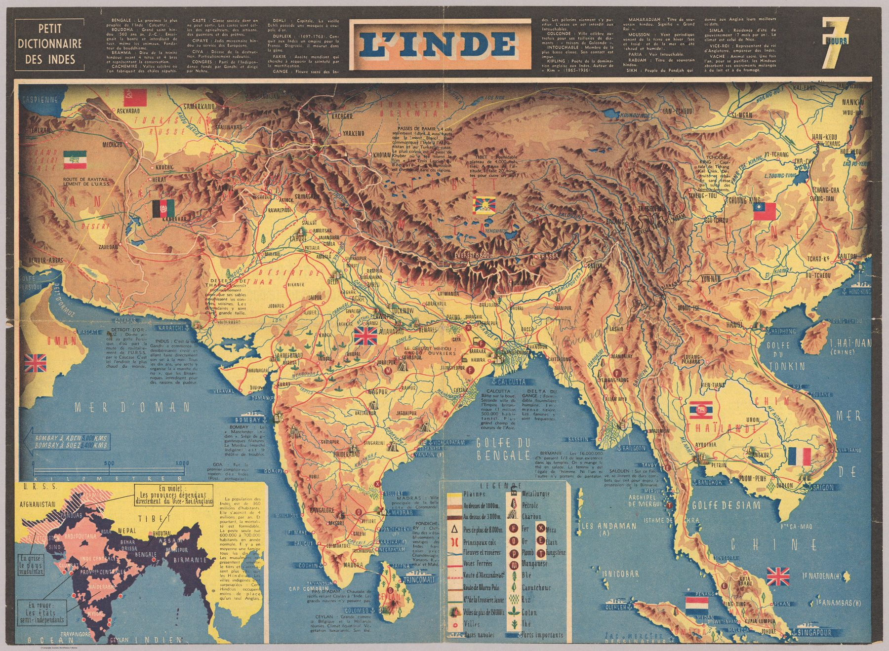

A French pictorial map of India by the commercial artist Jacques Mercier, made for an illustrated wartime map series. India becomes modern current-affairs geography: a complex subcontinent compressed into an immediately legible image for the European mass public.
The object
L’Inde was drawn by Jacques Mercier, a French commercial artist, and printed in Paris by Desfossés-Néogravure as part of an illustrated map series. The sheet is undated; internal evidence places it at about 1942.
A map for the mass public
This is popular journalistic cartography – a pictorial, accessible map made for readers following a distant theatre of world affairs. Its purpose is speed of comprehension. Selection, emblem and graphic hierarchy replace the slower density of the survey sheet.
The gaze
Who bought this sheet matters more than who drew it. A Paris reader in 1942 was offered British India as a piece of the war’s geography, a possession whose political future was contested, reduced to emblems that could be absorbed between news pages. The survey tradition behind the earlier sheets supplies the outline; everything else has been replaced by pictures.